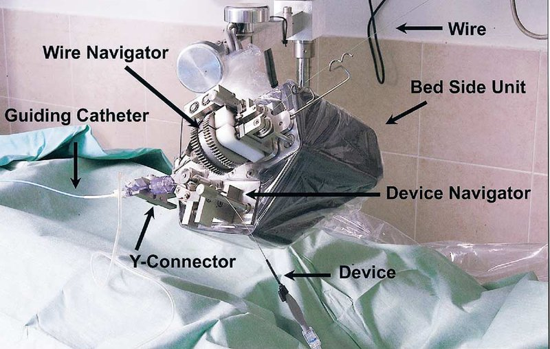

Commercial and clinical-stage systems · rns_beyar2006
RNS
Remote Navigation System (RNS)

1 / 3


- Family
- Commercial and clinical-stage systems (clinical-stage)
- Devices
- standard 0.014-in coronary guidewire and the angioplasty device (balloon or stent); the guiding catheter is hooked to the RNS but not driven; the two devices are interlocked: 'When the guidewire is manipulated, the device is locked at its position and vice versa' (beyar2006_remote p. 296-297). Rapid-exchange devices per wagener2024_features (not stated in beyar2006)
- Degrees of freedom
- 3: wire axial and rotation (optionally discrete 30-degree steps), device axial (beyar2006_remote p. 296)
- Push
- Friction rollers
- Twist
- Other
- Tested up to
- Human
- Sim-to-real
- None found — No simulation-trained controller found for this robot.
Testing
- Highest level
- Human
- What was tested
- glass coronary model; anaesthetised sheep (number N.R.), 14 coronary branches, 8 stents implanted; first-in-human pilot: 18 patients (15 men, 3 women) at 3 centres, single-vessel PCI (beyar2006_remote p. 297); 20 lesions per wagener2024_features Table 1 (lesion count not stated in beyar2006)
- Key numbers
- wire crossed the lesion in 17 of 18; stent delivered in 15 of 17; technical success 94% (guidewire) and 83% (overall procedure); clinical success 100%; fluoroscopy time 8.8 +- 4.8 vs 9.1 +- 3.5 min with standard technique (NS); catheterisation time 44 +- 32.7 vs 61 +- 19 min; diameter stenosis 60.6 +- 13.5% -> 17.0 +- 7.8%; no in-hospital MACE (beyar2006_remote p. 296-298)
Mechanism
- Push (translation)
- friction-roller (device: motored roller pair with a passive motion-sensing roller pair behind it, beyar2006_remote p. 296, Fig. 2B; wire: 'mechanical transmission module', type N.R.)
- Twist (rotation)
- wire navigator rotates the wire through a mechanical transmission module (type N.R.) (beyar2006_remote p. 296)
- Device range
- N.R.
- Target anatomy
- coronary PCI
Sensing and interface
- Force sensing
- no force sensor named: motion-sensing rollers report slippage of the motored rollers and the system halts; 'any force that exceeds a threshold causes system stall' (beyar2006_remote p. 296, 299)
- Leader and haptics
- no: computerised touch-screen control console and joystick (beyar2006_remote p. 296, Fig. 3); haptic force feedback named as future work (p. 299)
- Imaging
- standard fluoroscopy screens; the protocol kept the operators at the bedside (beyar2006_remote p. 299)
- Sterility
- detachable wire and device navigators on a sterile plastic-sheet-covered base; Y-connector in a sterile holder (beyar2006_remote p. 296, Fig. 2 caption); disposable status N.R.
Size
- Footprint (mm)
- N.R.
- Mass (kg)
- N.R.
Simulation
- Simulation model
- none found
- Sim-trained controller
- none found
Versions
- Lineage
- 2005 concept, design and pre-clinical studies (EuroIntervention 2005;1:340-5, cited as weisz2013_safety ref. 1; not read); 2006 JACC first-in-human pilot (beyar2006_remote); described as the basis of CorPath 200 (crinnion2022_robotics; no full text states that NaviCath became Corindus)
Sources
- Remote-Control Percutaneous Coronary Interventions: Concept, Validation, and First-in-Humans Pilot Clinical Trial · Journal of the American College of Cardiology, 2006 · doi:10.1016/j.jacc.2005.09.024 [beyar2006_remote]
- Features and Limitations of Robotically Assisted Percutaneous Coronary Intervention (R-PCI): A Systematic Review of R-PCI · Journal of Clinical Medicine, 2024 · doi:10.3390/jcm13185537 [wagener2024_features]
- The Catheter and Guidewire Operating Systems of Vascular Interventional Surgical Robots: A Systematic Review · IEEE Transactions on Medical Robotics and Bionics, 2023 · doi:10.1109/tmrb.2023.3272049 [chen2023_operating]
- Robotics in neurointerventional surgery: a systematic review of the literature · Journal of NeuroInterventional Surgery, 2021 · doi:10.1136/neurintsurg-2021-018096 [crinnion2022_robotics]
Notes
- Notes
- In S8_systems.csv but in no catalogue file before A9 (A3 assigned it to A4; A4 did not add it). Picture is a schematic reproduced in chen2023_operating. | X2 2026-11-08: raised to full text (beyar2006_remote). Two devices loaded but only one moves at a time. Main picture now Beyar Fig. 2(A) photo (old schematic kept as rns_beyar2006_prev.png).
This record
- Read level
- full — full (beyar2006_remote); secondary (reviews)
- Picture
- beyar2006_rns Fig. 2(A) (prototype bedside unit on the patient table, loaded with wire and device), JACC 2006;47:296-300, p. 3, ↗ — licence: publisher copyright (Elsevier / ACC Foundation); grade C
- Picture changes
- native extract (embedded 1000 x 1172 holds panels A and B); cropped to panel A without the panel letter; nothing erased; none upscaled
- Found by
- gap: Gap searches for robots the other searches missed.
- Data
- JSON · YAML:
records/robots/rns_beyar2006.yaml - Correction
- Suggest a correction [repository not created yet]